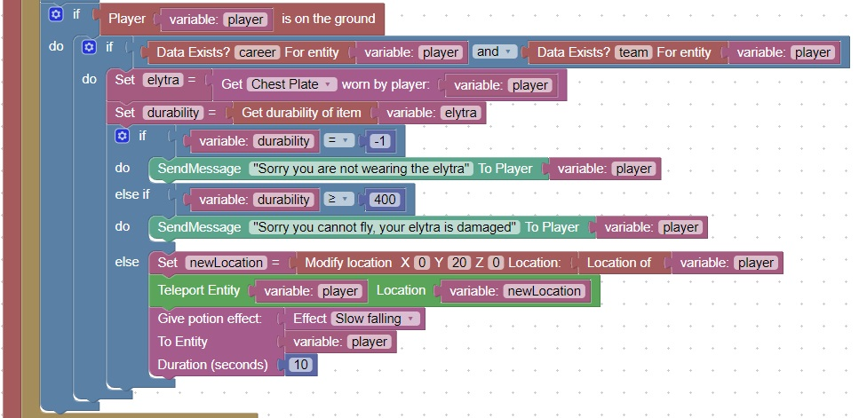

Elytra Durability
As an elytra is used, it wears out, and its durability increases. Also if the player takes damage while flying, the elytra also takes damage.
This code will check the durability of a worn elytra and notify the user if it is too damaged to fly
